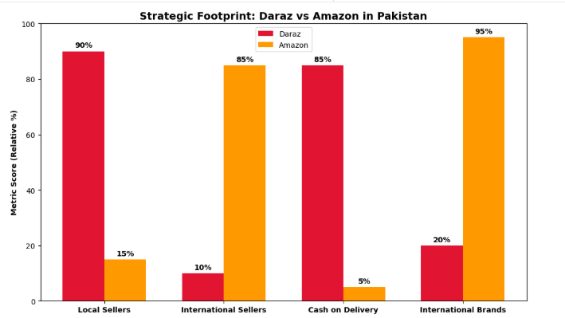
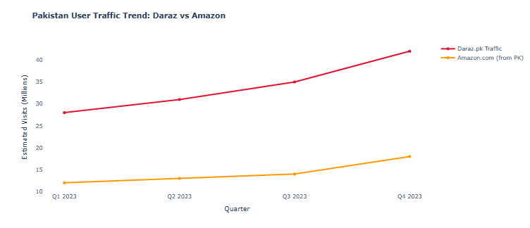

Introduction
Pakistan's digital economy is accelerating. With over 120 million internet users and a young, tech savvy population, the e-commerce sector is poised for transformation. Two players dominate the narrative: Daraz, the local champion acquired by Alibaba, and Amazon, the global titan making strategic inroads.
This is not merely a marketplace competition. It is a battle of business models, logistics capabilities, and cultural adaptation. The winner will define how Pakistan shops online for the next decade.

1. Market Position and Strategic Footprint
Daraz holds first mover advantage. Established in Pakistan in 2012 and acquired by Alibaba in 2018, it is built for South Asia. Its strategy is hyper local: local languages, cash on delivery dominance, and dense vendor networks in major cities.
Amazon's entry is more nuanced. It lacks a dedicated Pakistani marketplace but is a major player through its global platform. Sellers use Amazon to export goods abroad. Consumers with international payment methods import products. Amazon's footprint is digital and import export focused, not yet a full local logistics play.
2. Operational Battlefield: Logistics and Customer Trust
The core of e-commerce is delivery and trust. Daraz has invested heavily in its own logistics arm, Daraz Express. It built warehouses and last mile networks. This addresses Pakistan's infrastructure gaps. Its platform is optimized for lower average order values and high frequency purchases.
Amazon relies on international couriers for cross border shipments into Pakistan. This results in higher costs and longer delivery times. Its advantage is trust in authenticity and a vast global catalog. For Pakistani sellers, Amazon's Fulfillment by Amazon system is a gateway to lucrative export markets, particularly the United States and UAE.
3. The Future Battleground: Payments and Ecosystem
The fight is moving to fintech. Daraz integrates Daraz Wallet and promotes bank partnerships. It aims to shift consumers from cash to digital payments. Its app is evolving into a super app, incorporating video features and gaming.
Amazon leverages its global payment infrastructure. Its key opportunity is facilitating easy cross border payments for Pakistani sellers and buyers. This is a significant hurdle in a currency controlled economy. The future may see Amazon partner with a local financial player to gain ground.
Key Takeaways
- Daraz wins on local depth: It owns the last mile logistics and understands the cash driven, mobile first Pakistani consumer.
- Amazon wins on global breadth: It is the default platform for export oriented sellers and consumers seeking international product authenticity.
- The markets are currently segmented: They compete less directly, serving different primary needs: daily local commerce versus premium imported goods.
- The convergence point is fintech: The platform that best solves digital payments and financial inclusion will gain a decisive, long term advantage.
Conclusion and Call to Action
The battle for Pakistan's e-commerce is asymmetric. Daraz is building a localized fortress. Amazon is extending a global bridge. In the short term, coexistence is likely. In the long term, collision is inevitable as both platforms evolve.
For businesses and investors, the strategy is not either/or. A dual presence is optimal. Use Daraz for volume and domestic reach. Leverage Amazon for margin and global branding.
For consumers, enjoy the benefits of this competition. Expect better services, more choices, and increasing innovation. Your digital shopping habits will determine the victor.
The ultimate call to action is strategic observation. Watch for Amazon's potential local partnerships. Monitor Daraz's fintech moves. In this battle, the biggest winner will be Pakistan's digital economy itself.